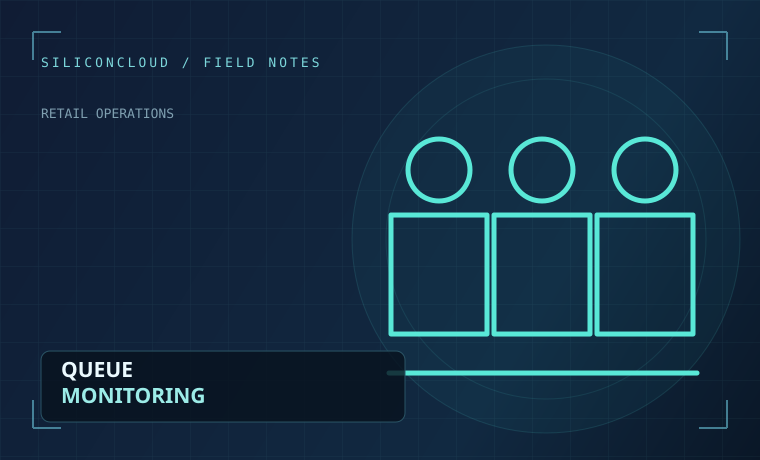

AI Video Analytics for Retail: The Practical Guide
How computer vision turns camera footage into useful footfall, queue and event information. Learn where AI supports stores, what each capability measures and how to evaluate results.
Read the guideOur foundational guide connects retail needs to the computer vision systems behind them.
How computer vision turns camera footage into useful footfall, queue and event information. Learn where AI supports stores, what each capability measures and how to evaluate results.
Read the guide
Camera placement, line-crossing logic and validation techniques for useful visitor counts.
Read article
Calculate inference demand, test pipelines and avoid misleading cameras-per-GPU assumptions.
Read article
Measure checkout activity and design alerts that support store staff.
Read article
A responsible deployment checklist for camera access, data retention and human review.
Read articleA useful video analytics deployment depends on both operational understanding and technical discipline.
Footfall counting, queue monitoring and ways to use operational signals.
Explore capabilityModel throughput, cloud compute, stream processing and storage planning.
Explore capabilityVideo privacy, data minimisation, access controls and human review.
Explore capability